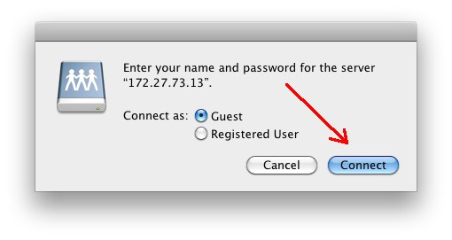

ÄänekkyysKorjaus - palvelimen levyn mounttaaminen OS X työasemaan
Klikkaa hiirellä tyhjää kohtaa työpöydällä ja anna näppäimistökomento: cmd
+ k
Kirjoita luukkuun "Server Address" palvelimen osoite.
Huom. Verkko-osoitteen pitää alkaa merkkijonolla smb://
Huom. Kuvassa oleva verkko-osoite on vain esimerkki, tarkista
tukihenkilöltäsi mikä todellisen palvelimen verkko-osoite on.
Klikkaa "Connect".

Seuraavassa ikkunassa klikkaa valinta "Guest" aktiiviseksi.
Huom. älä anna käyttäjätunnusta tai salasanaa, palvelimen levy mountataan
ilman käyttäjätunnusta.

Kun olet klikannut valinnan kohtaan "Guest", muuttuu ikkuna
samanlaiseksi kuin alla. Klikkaa "Connect".

Mountatun levyn kuvake ilmestyy nyt työpöydälle. Jotta levyn
mounttaaminen jatkossa olisi helpompaa, pitää levystä tehdä työpöydälle ns.
Alias.
Pidä alt + cmd - näppäimet alhaalla ja rahaa levyn
kuvakkeesta kopio työpöydälle. Levyn voi jatkossa mountata tuplaklikkaamalla
tätä "Alias-kuvaketta". Kun levyn mounttaa aliaksen avulla, ei tarvitse
tehdä mitään muita yllä mainittuja toimenpiteitä.

Aliaksen tunnistaa kuvakkeen vasemman nurkan päällä olevasta ylöspäin
osoittavasta nuolesta.